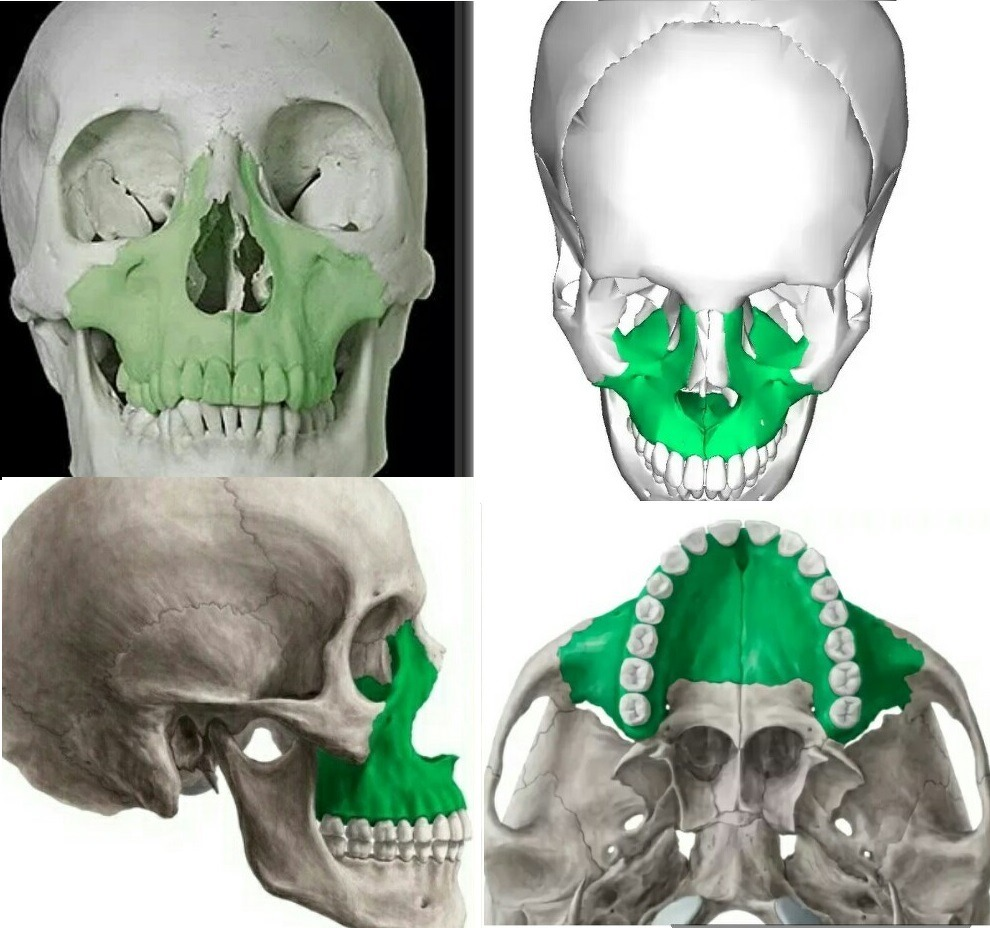
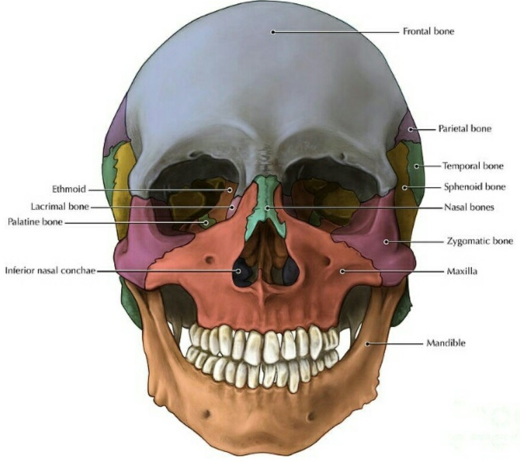

Сегодня дам простые упражнения языком. Они хороши тем, что их можно выполнять где угодно и когда угодно (ведь никто и не заметит, что вы языком делаете) по принципу "чем больше - тем лучше". Я делаю и лежа, и сидя и на ходу.
Но сначала немного анатомии.
В остеопатии существует краниальная концепция, описывающая первичный дыхательный механизм или так называемый краниосакральный ритм, присущий головному мозгу и всей нервной системе. Он реализуется во всём теле и назван первичным, потому что влияет на все остальные физиологические процессы. В основе краниальной остеопатии лежит постулат, что кости черепа подвижны и пульсируют всю жизнь человека.
Череп постоянно расширяется и сужается, как цветочный бутон, а церебро-спинальная жидкость (ликвор) совершает волнообразные пульсации от черепа до крестца вдоль позвоночника. Швы черепа не зарастают всю жизнь до глубокой старости, обеспечивая подвижность костей между собой.
Итак, смотрим на строение лицевого черепа и запоминаем, где у нас находятся швы (стыки костей) и, соответственно, в каких местах мы должны осуществлять воздействие, чтобы обеспечить движение костей. При работе желательно удерживать внимание на костях и пробовать ощущать и визуализировать их мягкое движение вперёд, вверх и вширь.
 Берем жвачку. Можно сразу две или больше, жуем до мягкости, затем языком приклеиваем ее в центре нёба и начинаем толкающими движениями языка распластывать жвачку по нёбу тонким слоем. Получается этакое "жевание языком". Не забываем при этом правильно глотать, с силой выталкивая вверх и вширь язык, распрямляя шею сзади и контролируя неподвижность щек.
Ставим язык в положение кобры и упираемся им в нёбо. Можно начать с точки покоя за зубами, а потом переходить вдоль срединного небного шва все глубже к глотке. В этом положении начинаем давить языком на нёбо, мысленно продолжая вектор давления языка наверх в область носа, глаз, переносицы... Держим до ощущения распирания в носу -глазах - переносице, на вдохе визуализируем движение костей максиллы вверх и вперед, на расширение. Этот прием, выполняемый в глубине нёба, на самом заднем его своде, может помочь в избавлении от межбровки - тут важно ощутить распирание именно в районе носо-лобного и методического швов в зоне переносицы. В этом упражнении так же можно использовать жвачку в качестве утяжелителя